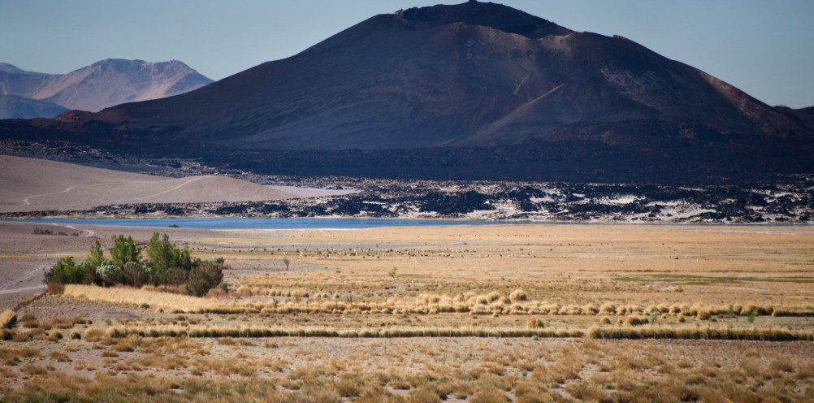
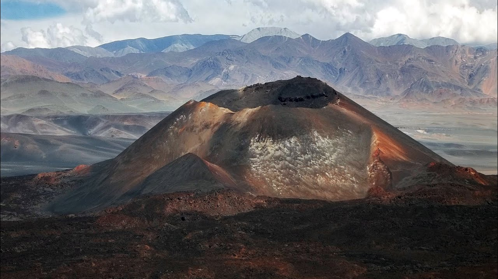
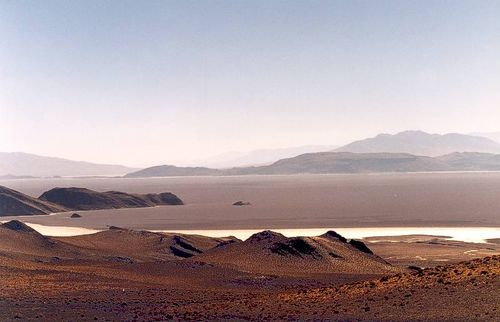
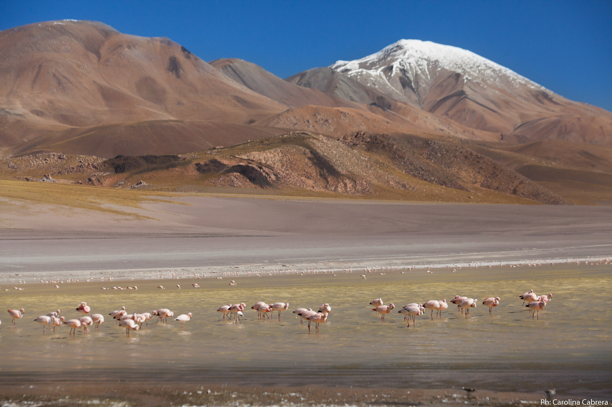

DESIERTOS Y MONTAÑAS
Disfruta de un Viaje a Nuestros Origenes y Recorre la Historia a travez del Arte y la Arquitectura de los Primeros Habitantes de esta Tierra
VOLCANES
Fabulosos conos volcánicos, extensas coladas de lava, campos de roca volcánica; Siete de los ocho volcanes más altos del mundo se encuentran en catamarca.
Consultar Clima
Volcán Galan

Ubicado en el departamento Antofagasta de la Sierra, el Volcán Galán es un fenómeno de la geología, su nombre proviene del quechua "Kkala” que significa “desnudo". Tiene una caldera volcánica con un domo resurgente que forma un cerro en su interior. Su boca mide 42 km de diámetro, y por sus dimensiones es considerado el más grande del mundo.
Leer Mas
Volcán Alumbrera
El Volcán Alumbrera con su caldera de 300 mts de diámetros y fondo rocoso de 200 mts, se encuentra a 11 km de la Villa de Antofagasta. Desde su cráter tiene una vista unicca del paisaje que se encuentra a su alrededor, como la Laguna Alumbrera formada por el río Punilla, el mas importante de la zona, en el habitan flamencos rosados y otras especies.
Leer Mas
Volcán Antofagasta
El Volcán Antofagasta es una chimenea de 4000 m.s.n.m con forma de cono ceniza, se ubica a unos 8 km al sur de la Localidad de Antofagasta de la Sierra.Su Vista Panorámica desde el punto sur oriental del cráter, abarca desde el Campo de Piedra Pómez hasta la Laguna Antofagasta. Se puede llegar en vehículo, a caballo o caminando.
Leer Mas
SALARES
Paisajes desérticos, rústicos y sutiles a la vez, con especies de flora y fauna unicas; que nos recuerda a otro planeta.
Consultar Clima
Salar de Antofalla

Es uno de los lugares más inhóspitos e inaccesibles de la Puna Argentina. Sin agua, ni vegetación y sólo formas caprichosas trabajadas por la erosión durante milenios es lo único que se encuentra en decenas de kilómetros a la redonda.
Leer Mas
Salar del Hombre Muerto
Ubicado el corazón de la puna catamarqueña, conforma un depósito salino o salar, en cuyo subsuelo, el agua subterránea es una salmuera saturada de cloruro de sodio, portadora de litio, potasio, sulfato, borato-bórax, y otros componentes menores como el rubidio, el cesio, y el bromo..
Leer Mas
Salinas Grandes

Ubicadas en el ingreso a nuestra Provincia, forman la mayor parte y el núcleo de la geográficamente llamada Cuenca Saliniana, tiene una extensión de 6000 km².
Leer Mas
LAGUNAS
Paisajes desérticos, rústicos y sutiles a la vez, con especies de flora y fauna unicas; que nos recuerda a otro planeta.
Consultar Clima
Laguna Diamante

E Lleva ese nombre por el reflejo del sol en las piedras que contiene. Ubicada en un inmenso cráter de 45km de diámetro y en su interior, posee un espejo de aguas turquesas poblada de flamencos.-
Leer Mas
Laguna Grande
Se ubica a una altitud de 4150 msnm camino al cráter del volcán Galán, el más grande del mundo, posee la mayor concentración de flamencos rosados que hay en la Puna.
Leer Mas
Laguna Antofagasta